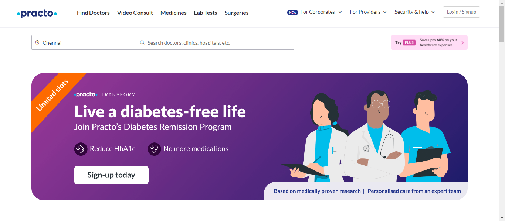
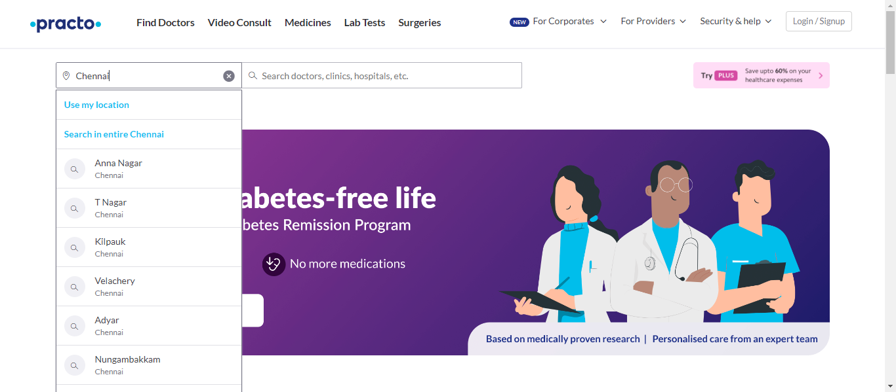
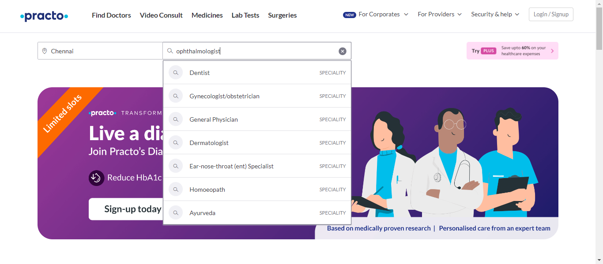
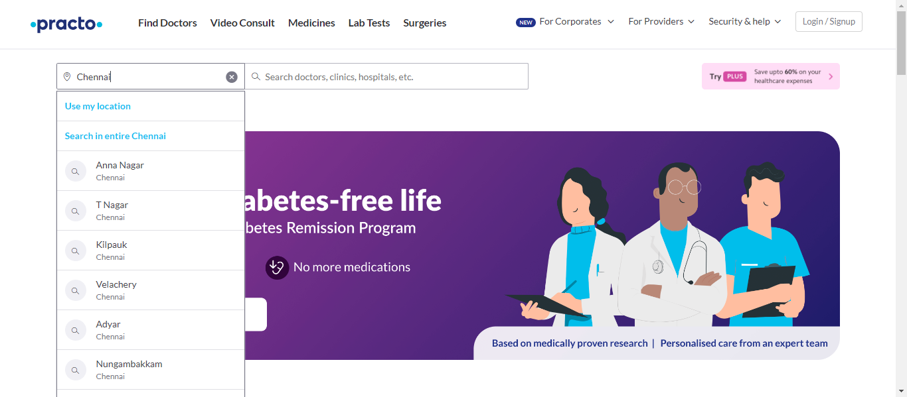
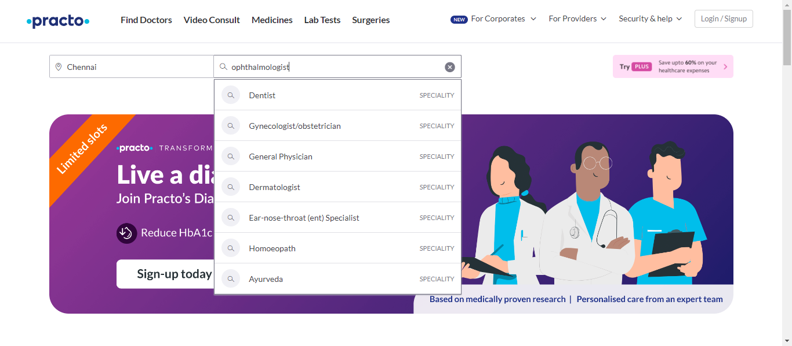

-
Finding Hospitals
2:48:38 pm / 00:01:49:824 Fail
Finding Hospitals
02.27.2024 2:48:38 pm 02.27.2024 2:50:28 pm 00:01:49:824 · #test-id=1PassNavigate to practo.comGiven user should open the browser and navigates to practo.com site with urlfindingHospitals.StepDefination.Hooks.addScreenshot(io.cucumber.java.Scenario)Navigate to practo.comThen verify the title of practo.com sitefindingHospitals.StepDefination.Hooks.addScreenshot(io.cucumber.java.Scenario)Navigate to practo.com Failsearching for dentists in enterd locationFailsearching for dentists in enterd locationGiven user is on practo.com home pagefindingHospitals.StepDefination.Hooks.addScreenshot(io.cucumber.java.Scenario)searching for dentists in enterd locationThen user should clear the location and send the "Chennai" namefindingHospitals.StepDefination.Hooks.addScreenshot(io.cucumber.java.Scenario)searching for dentists in enterd locationWhen user searches for doctor "ophthalmologist" in home page search barfindingHospitals.StepDefination.Hooks.addScreenshot(io.cucumber.java.Scenario)searching for dentists in enterd locationAnd user selects male from "Male Doctor" dropdownAnd user selects thirty plus Patient Stories from "30+ Patient Stories" dropdownStep skippedAnd user selects ten plus years from "10+ Years of experience" dropdownStep skippedAnd user selects experience high-low from "Experience - High to Low" dropdownStep skippedAnd user selects "Above ₹500" from allFiltersStep skippedAnd user selects "Available Today" from dropdownStep skippedThen validate top 5 doctor details are displayed in experience orderStep skippedAnd user should navigate back to home page by clicking practo iconStep skippedFailExtracting surgery namesGiven user should be in practo.com home pagefindingHospitals.StepDefination.Hooks.addScreenshot(io.cucumber.java.Scenario)When user should click on surgeriesStep skippedThen user should store the all the surgeries in list and display in consol outputStep skippedAnd user should navigate back to home page by clicking practo iconStep skippedFailvalidation of for corporate optionGiven user should be on practo.com home pagefindingHospitals.StepDefination.Hooks.addScreenshot(io.cucumber.java.Scenario)When user selects for corporate elementStep skippedAnd user clicks Health and wellness planStep skippedAnd user enters valid email and valid detailsStep skippedThen validate the demo buttonStep skippedAnd capture the thank you messageStep skippedWhen user enters invalid email and valid remaining detailsStep skippedThen validate the demo buttonStep skippedAnd navigate directly to to the home pageStep skipped
Failsearching for dentists in enterd locationFailsearching for dentists in enterd locationGiven user is on practo.com home pagefindingHospitals.StepDefination.Hooks.addScreenshot(io.cucumber.java.Scenario)searching for dentists in enterd locationThen user should clear the location and send the "Chennai" namefindingHospitals.StepDefination.Hooks.addScreenshot(io.cucumber.java.Scenario)searching for dentists in enterd locationWhen user searches for doctor "ophthalmologist" in home page search barfindingHospitals.StepDefination.Hooks.addScreenshot(io.cucumber.java.Scenario)searching for dentists in enterd locationAnd user selects male from "Male Doctor" dropdownAnd user selects thirty plus Patient Stories from "30+ Patient Stories" dropdownStep skippedAnd user selects ten plus years from "10+ Years of experience" dropdownStep skippedAnd user selects experience high-low from "Experience - High to Low" dropdownStep skippedAnd user selects "Above ₹500" from allFiltersStep skippedAnd user selects "Available Today" from dropdownStep skippedThen validate top 5 doctor details are displayed in experience orderStep skippedAnd user should navigate back to home page by clicking practo iconStep skippedFailExtracting surgery namesGiven user should be in practo.com home pagefindingHospitals.StepDefination.Hooks.addScreenshot(io.cucumber.java.Scenario)When user should click on surgeriesStep skippedThen user should store the all the surgeries in list and display in consol outputStep skippedAnd user should navigate back to home page by clicking practo iconStep skippedFailvalidation of for corporate optionGiven user should be on practo.com home pagefindingHospitals.StepDefination.Hooks.addScreenshot(io.cucumber.java.Scenario)When user selects for corporate elementStep skippedAnd user clicks Health and wellness planStep skippedAnd user enters valid email and valid detailsStep skippedThen validate the demo buttonStep skippedAnd capture the thank you messageStep skippedWhen user enters invalid email and valid remaining detailsStep skippedThen validate the demo buttonStep skippedAnd navigate directly to to the home pageStep skipped
-
org.openqa.selenium.NoSuchWindowException
3 tests
org.openqa.selenium.NoSuchWindowException
3 failedStatus Timestamp TestName Fail 14:49:27 pm And user selects male from "Male Doctor" dropdown Finding Hospitals.searching for dentists in enterd location.And user selects male from "Male Doctor" dropdownFail 14:50:28 pm findingHospitals.StepDefination.Hooks.addScreenshot(io.cucumber.java.Scenario) Finding Hospitals.Extracting surgery names.findingHospitals.StepDefination.Hooks.addScreenshot(io.cucumber.java.Scenario)Fail 14:50:28 pm findingHospitals.StepDefination.Hooks.addScreenshot(io.cucumber.java.Scenario) Finding Hospitals.validation of for corporate option.findingHospitals.StepDefination.Hooks.addScreenshot(io.cucumber.java.Scenario)
Started
Feb 27, 2024 02:48:14 pm
Ended
Feb 27, 2024 02:50:33 pm
Features Passed
0
Features Failed
1
Features
Scenarios
Steps
Timeline